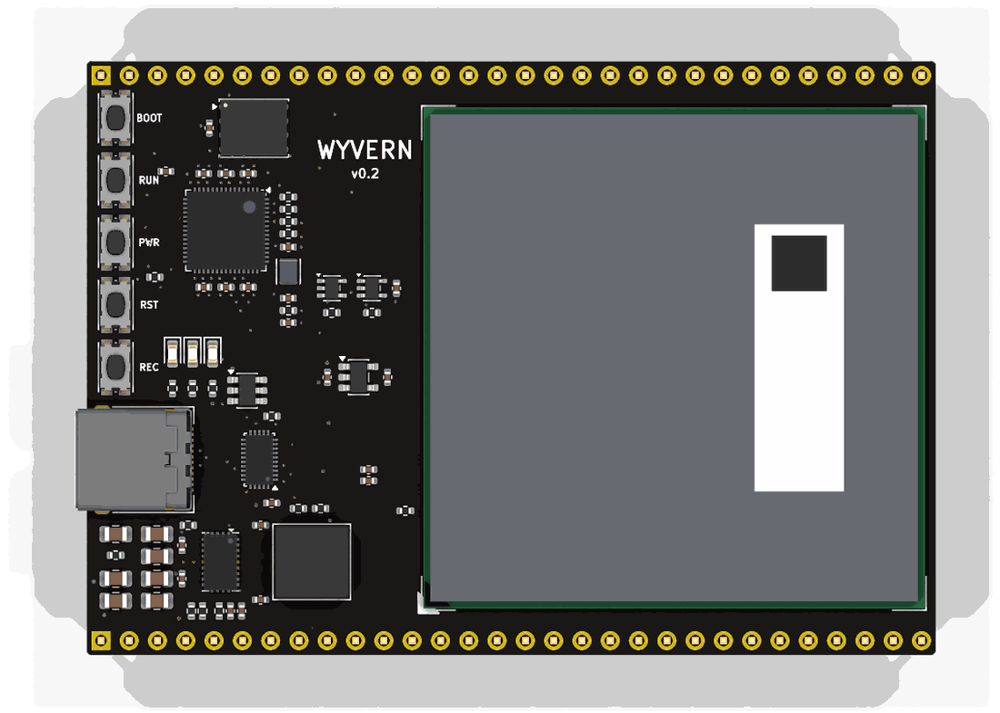
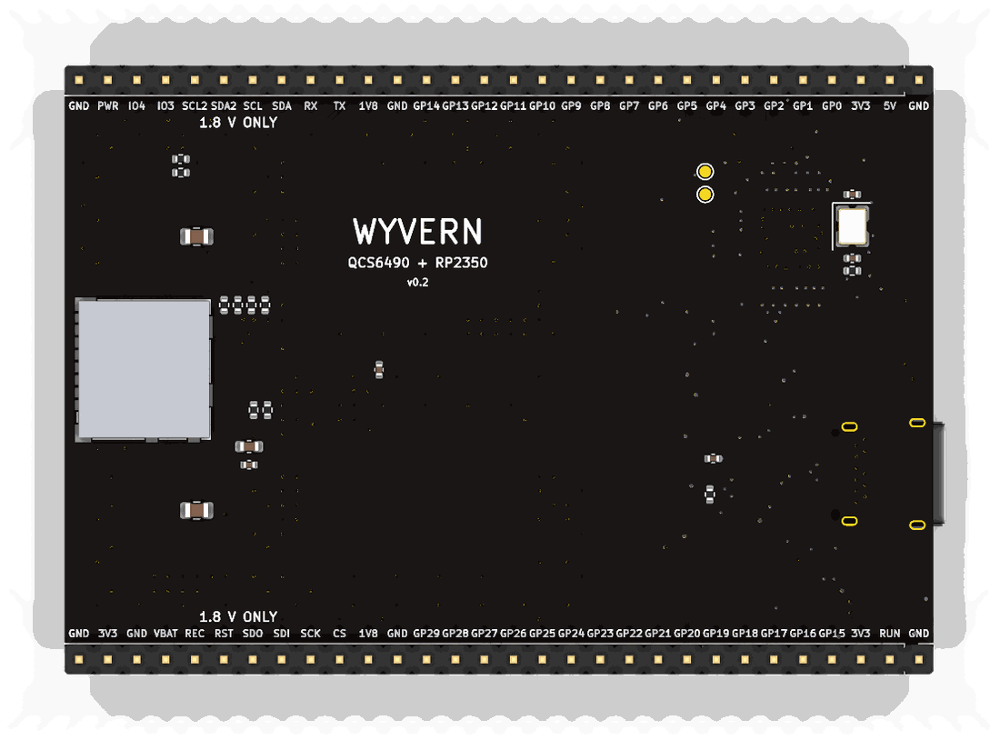

Examples · examples/snapdragon-dev-board/v0.2
Wyvern
A development board with a Snapdragon on it, on one flat board
The Qualcomm QCS6490 (8 Kryo 670 cores, 1 at 2.7 GHz, 3 at 2.4 GHz and 4 at 1.9 GHz; an Adreno 643; a Hexagon NPU of 12 TOPS; 8 GB of LPDDR5 and 64 GB of eMMC) comes on Vantron's VOSM6490, a 45 x 45 mm OSM Size-L module that is soldered straight onto the board by its 662 pads, like any other chip, and runs Linux or Android. Beside it, an RP2350 drives 30 pins at 3.3 V the way a Teensy's microcontroller does; the Snapdragon resets it, puts it in its bootloader and talks to it over USB, so Linux flashes it. The Snapdragon's own UART, 2 I2C buses, an SPI bus and 2 GPIOs are on the same rows at the module's end, at 1.8 V. One USB-C cable powers the board and carries USB 3.
- v0.2
- 76.2 × 53.3 mm
- 6 layers
- 94 parts
- 1,513 track segments
- 346 vias
- GREEN with 16 warnings
Drag to turn the board. KiCad's render of it, 36 views, 10 degrees apart.


Explore the board
Every track and part of the routed board, drawn from its file
The board as examples/snapdragon-dev-board/v0.2/wyvern.kicad_pcb holds it: six copper layers, 1,513 track segments, 346 vias and 118 nets. Point at a pad to see its part, and click a track, a via or a pad to follow its connection across the board.
Drag to move. Pinch, or hold Ctrl and scroll, to zoom.
Checks
The four checks on Wyvern v0.2
The verdict of the last run, as its gates report records it: GREEN with 16 warnings.
- Electrical rules (ERC)0 errors, 0 warnings
- Design rules (DRC)0 errors, 9 warnings (0 unconnected, 0 parity)
- Simulation (SIM)7 decks, 397 corner runs, 0 failures, 7 warnings
- Fabrication files (EXPORT)4/4 outputs, 26 gerber files
How it was built
Every step of the design, with what it changed
Each step as the README's "What changed" sections (v0.2/README.md) records it, oldest first.
The first board
The request: a new microcontroller development board, something like a Teensy but with a Snapdragon chip, compact, as the workcenter's example of what it can make. v0.1 carried a Snapdragon 845 on Lantronix's Open-Q 845 uSOM, plugged into 3 DF40 sockets on a 61 x 30.5 mm stick, with an RP2350 on the pins; its folder,
../v0.1/, tells the rest.One flat board
The request, on 2026-11-12: "there's a LOT of open hinges here, power, data, alot of routing, it looks like you slapped two board together too. Can it be one board for v0.2?"
What is open
What is still to be done on this board
- The module's own carrier guide. Vantron's datasheet gives pins and ratings; its carrier design guide and reference schematic would confirm the USB0 role (CC on the HD3SS3220, VBUS on C9), the SuperSpeed AC coupling and the power-on behaviour (the board has a PWR button; whether the module starts by itself when power arrives is not in the datasheet).
- VBUS at attach. C30, C31 and the damper's C42 hold 42 uF written, about 21 uF at 5 V of DC bias; USB Type-C asks a sink for at most 10 uF on VBUS at attach unless it limits its inrush. A 4 A load switch with a slew capacitor in front of them would bring the board inside it, and the cable's resonance would then see the switch's resistance too.
- Wi-Fi and Bluetooth. The module's radio is on the board's side (PCIe 1 lane and a UART, marked for WLAN and BT): an M.2 E-key slot or a soldered WCN module at the far end.
- Heat. The module is rated 5 V / 3 A and Vantron gives no thermal figures; a 40 x 40 mm stick-on heatsink on its shield is the bench answer, and mounting holes for a clamped one the next.
- ESD on the SuperSpeed pairs. U9 covers D+ and D-; a TPD4E05U06 on each side of the mux would cover the lane.
- Camera and display. The module's 4-lane CSI, DSI and eDP are unused; an FPC connector at the far end would bring one of each out.
- Firmware. The RP2350's side of the USB link and the pin map; the module's device tree for EXT_GPIO_1 and _2 and for USB0 as a peripheral with VBUS on C9.